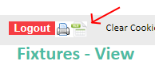

The new GMS from England Hockey allows you to download a CSV file of fixtures for a club, but the format isn't 100% ideal for importing into a club management system (like Teamo). This tool lets you open an exported file and will clean up the fields for you.
1. Choose File
2. Enter Club Name
Enter your clubname as it appears in the GMS data in your Teams. e.g. for "Mytown Women 3" enter "Mytown". This is used for two purposes:
1. To detect whether the fixture is home or away. 2. To pick out if any teams are just "Mytown" and append Women 1 / Men 1 on the end.
What it does
Updated file will have:
Competition/Event Separated into two columns
Home Team and Venue Split into two columns
New Column "My Team" added
New Column "Opposition" added
New Column "Home/Away" added
Top teams will be made unique e.g. "Clubname" -> "Clubname Men 1"
Any extra columns removed
Getting a File from the GMS
Updated file will have:
Login as a club admin
Go to fixtures
Choose your date range
You'll probably want to choose "All Associations"
Click Search
You should see all the fixtures you asked for
Click the Export button at the top 
Your export will download
You can upload it using Choose File on this page
Free Tool, No Warranties!
This tool is free, was quickly written to make importing fixtures easier. There are no warranties on accuracy, so check the output file you get!
If you do find it useful, and your club isn't already signed up to easyfundraising, sign up using the link below, and we'll get some bonus donations (at no detriment to your fundraising).